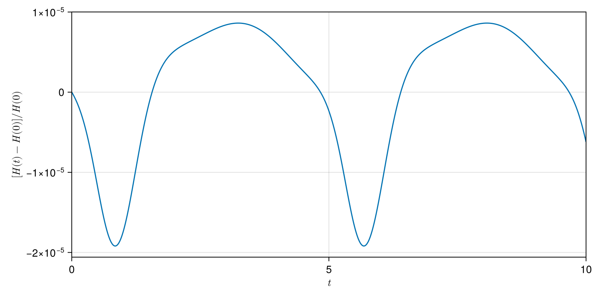
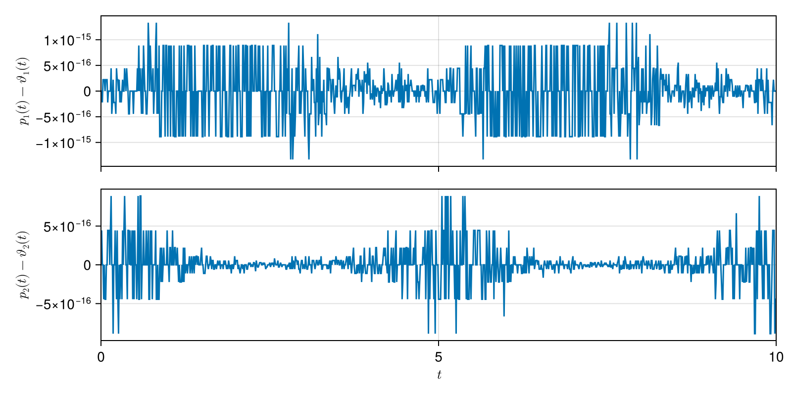
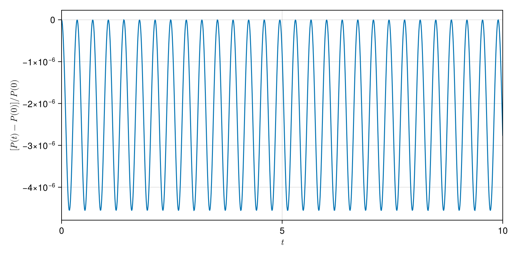

Diagnostics
Several models provide diagnostic helpers to quantify how well a numerical integrator preserves the geometric structure of the problem. Depending on the model these include:
compute_energy_error— the (relative) drift of the Hamiltonian / energy along a solution;compute_invariant_error— the drift of a general invariant (fromGeometricSolutions);compute_casimir_error— the drift of a Casimir of the Poisson structure (e.g. for the Lotka-Volterra 3d model);compute_momentum_error— the drift of a momentum map / one-form.
These functions are defined per model (see the respective module documentation) and typically take the time series, the solution, and the problem parameters, returning both the invariant time series and its relative error.
Diagnostic plots
When a Makie backend such as CairoMakie is loaded, the Diagnostics module provides generic plotting functions that visualise these diagnostics for a GeometricSolution:
plot_energy_errorandplot_energy_drift— the relative error of the energy, and its maximum absolute value per time interval;plot_invariant_errorandplot_invariant_drift— the same for any invariant the problem carries, selected with theinvariantkeyword (a key intoinvariants(problem),:hby default, or the invariant function itself). The energy variants above are the:hspecial case;plot_constraint_errorandplot_lagrange_multiplier— the drift of the momentum one-form and the multipliers of an implicit/variational (DAE) solution;plot_convergenceandplot_order— the error and the observed order of convergence over a sequence of time steps, for a convergence study.
For an ODE solution with an energy invariant, plot_energy_error shows the relative energy drift over time:
using GeometricProblems.LotkaVolterra2d
using GeometricProblems.Diagnostics
using GeometricIntegrators
using GeometricIntegrators.SPARK
using CairoMakie
sol = integrate(odeproblem(), Gauss(1))
plot_energy_error(sol)
For an implicit/variational (DAE) solution, plot_constraint_error shows the drift of the momentum one-form, with one stacked panel per degree of freedom:
dsol = integrate(idaeproblem(), TableauVSPARKGLRKpMidpoint(2))
plot_constraint_error(dsol)
Problems with more than one conserved quantity are what plot_invariant_error is for. The point vortices, for instance, conserve both the energy :h and the angular momentum :p:
import GeometricProblems.PointVortices as pv
pvsol = integrate(pv.odeproblem(), Gauss(1))
plot_invariant_error(pvsol; invariant = :p)